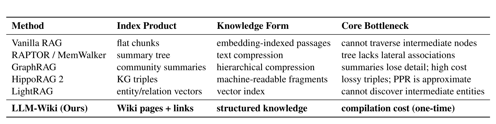
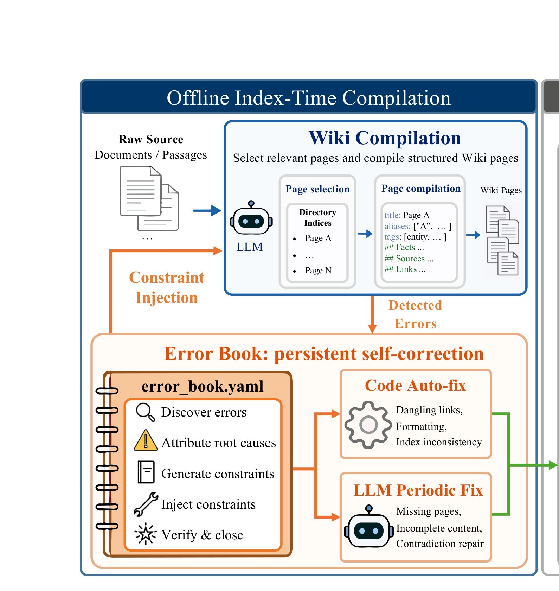
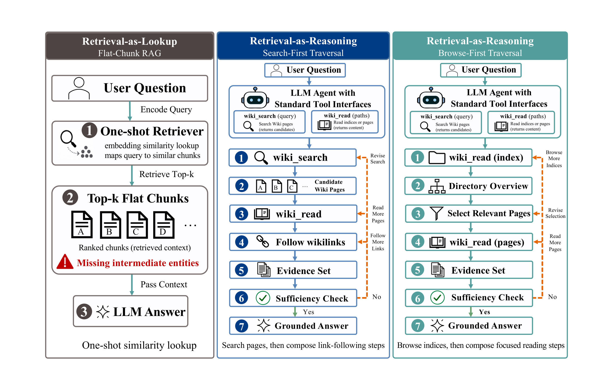
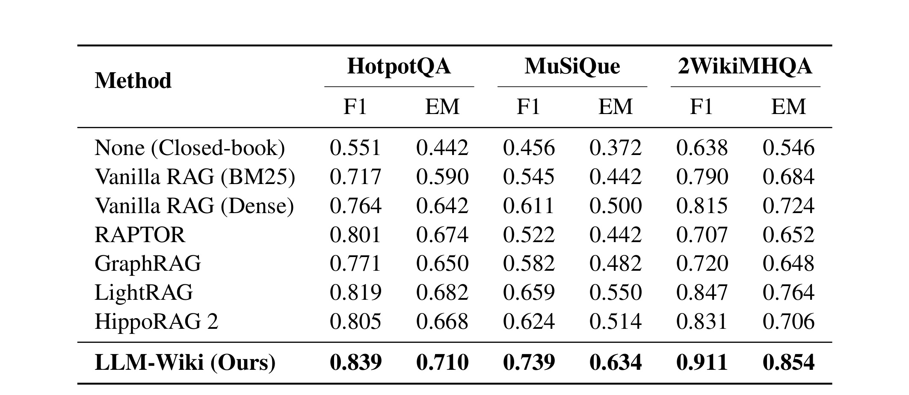
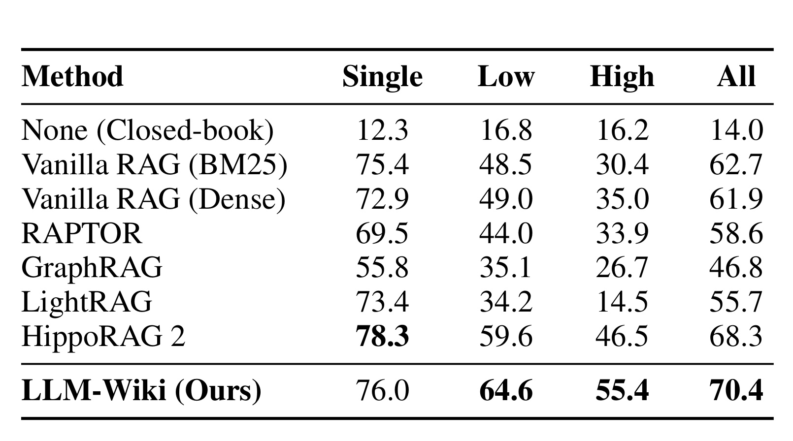
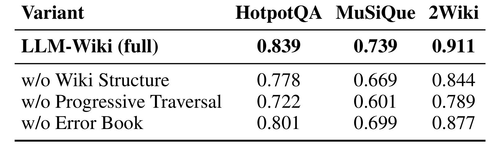
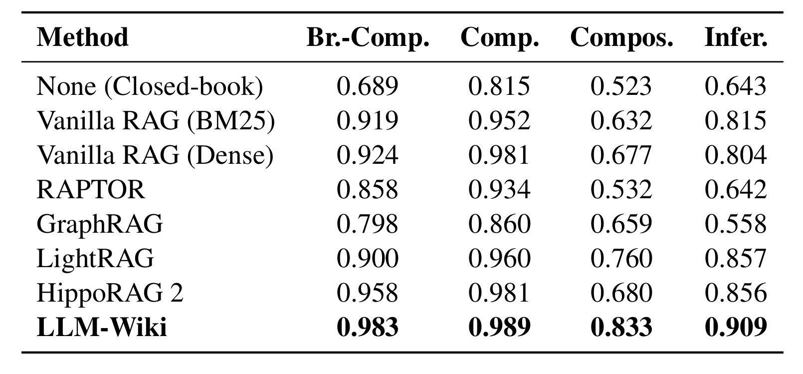
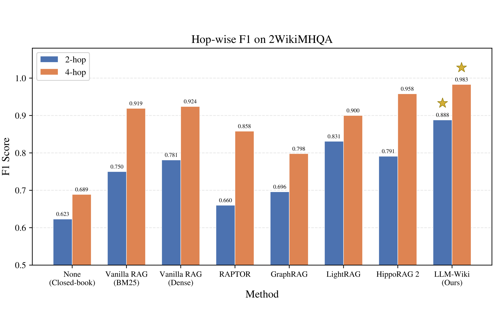
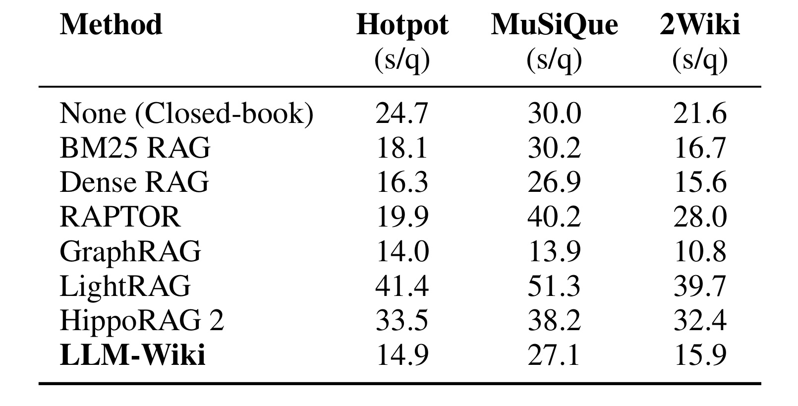

这篇论文讨论的是一个很具体但正在变得越来越核心的问题：当 LLM agent 不再只是“拿一段上下文然后回答”，而是在 ReAct 式循环里不断搜索、阅读、跟随线索、判断证据是否足够时，传统 RAG 的 flat chunks + top-k 相似度检索接口已经不够用了。作者 Haoliang Ming、Feifei Li、Xiaoqing Wu、Wenhui Que 均来自 WeChat, Tencent Inc., Beijing, China；本地目录名沿用上游 worker 分配的“多校-LLMWiki”，但论文 PDF 元信息和首页机构显示主机构是腾讯微信。唯一论文入口：Retrieval as Reasoning: Self-Evolving Agent-Native Retrieval via LLM-Wiki。本轮未核验到独立代码仓库或项目页。
论文的核心主张可以压缩成一句话：retrieval 不应只是 lookup，而应成为 agent 的 reasoning action。LLM-Wiki 不是提出一个新的 embedding 模型，而是把外部文档先编译成可搜索、可阅读、可沿链接遍历、可持续修复的 Wiki 知识结构，再通过 wiki_search 和 wiki_read 暴露给 agent。它的结果显示，在 HotpotQA、MuSiQue、2WikiMultiHopQA 和 AuthTrace 上，这种“结构先行、遍历执行、自我修复”的检索形态比 flat RAG、summary tree、graph-enhanced RAG 更适合多跳推理。
1. 背景和问题
1.1 从 retrieval-as-lookup 到 retrieval-as-reasoning
传统 RAG 的默认接口很窄：给定 query，retriever 从 chunk index 里取 top-k 段落，generator 在一次性上下文里完成回答。这个接口适合局部事实查找，例如“某个人出生于哪一年”或“文档里某个术语的定义是什么”。但多跳问题的难点通常不在第一跳，而在中间实体是否能被显式发现。论文开头用 2WikiMultiHopQA 的四跳问题说明这一点：比较电影 The Gamecock 和 Monster A Go-Go 哪一部的导演更年长。dense retriever 可能能召回两个电影页面，却召不回导演人物页面，因为“导演出生日期”与原始问题的语义距离不一定近；如果没有导演页面，模型只能猜。一个 agent 如果能先读电影页，再沿显式链接进入导演页，再比较出生日期，就能把原本隐式的检索缺口变成一串可执行的推理步骤。
这就是论文所谓 retrieval-as-lookup 与 retrieval-as-reasoning 的分界。lookup 的检索模块在 reasoning 之前完成，agent 只能消费固定上下文；reasoning 的检索接口则允许 agent 在中间观察之后继续决定下一步读什么、沿哪条链接走、是否证据已经够了。这个变化看似只是“多轮检索”，其实更深层的是知识组织方式改变：如果底层仍是互相独立的 chunks，多轮检索只是反复对字符串做相似度匹配；如果底层是带目录、别名、标签、来源引用和双向链接的 Wiki page，agent 才有稳定的结构对象可以规划和遍历。
1.2 不是换一个 retriever，而是换知识组织形态
论文把现有方法分成几类：Vanilla RAG 产生 flat chunks；RAPTOR/MemWalker 产生 summary tree；GraphRAG 产生 community summaries；HippoRAG 2 产生 KG triples；LightRAG 维护 entity/relation vectors。它们都试图解决“flat chunks 缺结构”的问题，但输出物对 agent 并不完全友好：summary tree 有上下层压缩但缺少横向实体关联，community summary 容易丢细节且成本高，KG triples 更机器可读但对人和 agent 都偏碎片化，entity/relation vectors 仍然依赖相似度与图索引而不是可读页面。

Table 4 的价值在于把 LLM-Wiki 的贡献从“又一个 GraphRAG”里区分出来。GraphRAG、HippoRAG 2、LightRAG 都已经承认知识不应只被切成独立 chunk，但它们的 index product 仍主要服务检索器：summary、triples、vectors 是检索中间结构，不一定是 agent 可以像人读 Wiki 一样逐页检查的知识空间。LLM-Wiki 的 index product 是 Wiki pages + links，knowledge form 是 structured knowledge，核心瓶颈也从 runtime retrieval accuracy 转成 one-time compilation cost。这个定位很关键，因为论文后面的实验证据不是说“LLM-Wiki 的 embedding 更强”，而是说“把知识编译成可遍历结构后，agent 可以把中间实体显式化”。
1.3 三个研究问题
作者围绕三个问题组织全文。第一，compilation-based knowledge organization 能否比 flat RAG 和 graph-enhanced retrieval 更适合知识密集 QA？第二，agent-controlled compositional traversal 是否真的能利用 Wiki structure，通过 search、read、link-following、sufficiency check 形成更稳的证据链？第三，LLM 编译结构化知识时不可避免会产生 dangling links、unsupported facts、cross-page contradictions 等错误，能否通过一个 persistent Error Book 持续检测、修复和减少复发？
这三个问题对应 LLM-Wiki 的三个原则：compilability、composability、evolvability。compilability 指 raw documents 被转成结构化、显式链接、可长期维护的 knowledge units；composability 指 retrieval 被拆成 search、read、follow links 等原子工具，由 agent 在推理循环中组合；evolvability 指知识结构不会静默腐烂，而是能通过 Error Book 记录错误模式、注入约束、修复页面。这里最值得注意的是第三点。很多 RAG 系统默认 index 一旦建好就是静态资产，但 LLM 编译 Wiki 页面本身会引入结构性错误；如果没有持续修复，越结构化的知识库越可能把错误传播到后续遍历路径里。
1.4 与推荐系统和 agent 检索的关系
这篇论文属于 LLM/RAG 方向，但对推荐系统也有参考价值。推荐场景里的用户理解、商品知识、创作者画像、内容安全规则、活动机制，经常不是单一事实，而是多实体、多关系、多来源证据的组合。传统向量召回能找到语义相近内容，却很难保证中间关系完整。例如一个 agent 要回答“某类用户为什么对某类内容近期互动下降”，它可能需要先查用户分群，再查内容主题，再查活动或供给变化，再查历史规则。如果知识底座只有 chunks，agent 只能不断改 query；如果知识底座有可维护的页面、目录和双向链接，它可以像分析师一样沿结构线索追踪。
不过论文也没有把 Wiki 编译说成免费午餐。它把成本前置到了 ingestion 阶段，每个 source passage 都需要 page selection 和 page compilation；当 Wiki 扩到数万页后，目录会变得庞大，page selection 也会退化。这意味着 LLM-Wiki 更适合“知识会复用、问题需要多跳、结构维护有价值”的场景，而不是一次性问答或高速变动的全网检索。
2. 方法
2.1 Wiki 编译与页面形态
LLM-Wiki 的第一层是 index-time compilation。原始文档不是直接切 chunk 入库，而是被编译成 Wiki 文件树：根目录有 index.md，每个知识目录有 _index.md，实体、事件、概念、媒体、组织、人物等页面以 Markdown 形式保存，另有 sources/ 保存 source digests 和 original archives。一个页面包含 YAML frontmatter、aliases、tags、summary、key facts、related pages、related sources。这个 schema 的设计目标不是美观，而是让 wiki_search 能用 page names、aliases、tags、descriptions 找到候选页，让 wiki_read 返回既可读又带链接的页面内容。

Figure 1 的截图保留了左侧编译链路和 Error Book 子区域：raw source 先进入 page selection，再进入 page compilation，生成带 title、aliases、tags、facts、sources、links 的 Wiki pages；如果 validator 检测到错误，Error Book 会把 constraint injection 反馈给后续编译 prompt，也会触发 code auto-fix 和 LLM periodic fix。原图右侧还有 structured Wiki knowledge base：directory/index structure 给 agent 提供全局与局部目录，linked Wiki pages with bidirectional links 给 agent 提供实体之间的可遍历边。图中最重要的不是“有一个 Wiki UI”，而是编译产物同时满足人可审计和机器可导航。对于 agent 来说，entities/Page A 到 entities/Page B 的双向链接把原先要靠 embedding 猜出来的中间实体变成了显式 action affordance。
编译循环中有一个 page selection 上界。论文实现里 SELECT PAGES 最多选择 5 个相关已有页面：
符号解释：S 是当前 source passage 进入编译前选出的相关 Wiki 页面集合；k 是最大候选页面数。这个约束控制了编译时上下文规模，也避免 LLM 在每次更新时随意改动整个 Wiki。它的工程含义是：系统把新信息接入既有知识结构时，只允许在有限局部范围内做结构更新，后续再用 validator 和 Error Book 检查是否产生了 dangling link、index inconsistency 或 unsupported fact。
2.2 Error Book 自演化机制
Wiki 编译最容易被低估的风险是结构性幻觉。LLM 在生成页面时可能创建不存在的 wikilink，可能写出格式不符合规范的 source reference，可能覆盖未被选中的页面，可能把一个 source passage 中没有支撑的事实写进 key facts，也可能让两个页面出现日期、关系、属性冲突。LLM-Wiki 没有把这些问题交给一次性 post-processing，而是设计了 Error Book：一个持久化的 error_book.yaml，记录 error phenomenon、root cause、constraint rule、verification method 和 lifecycle status。
Error Book 生命周期有五步。Discover 阶段由 deterministic validators 发现结构错误，由 source-grounded LLM verification 和 cross-page consistency checks 发现内容错误。Attribute 阶段把错误追溯到根因，例如“假定链接目标已存在但没有查 index”。Constrain 阶段把根因转成自然语言规则，例如“不要创建 _index.md 中不存在的页面链接”。Inject 阶段把 open constraints 注入后续 compilation prompt。Verify & Close 阶段周期性重验旧错误，确认修复后关闭条目。
论文还把修复分成两层。Layer 1 是 Code Auto-fix，每个 compilation batch 后运行，修 dangling links、formatting、index inconsistency 这类结构错误。Layer 2 是 LLM Periodic Fix，每 N 篇文章触发，处理 missing pages、incomplete content、unsupported facts、cross-page contradictions 等需要语义判断的问题。这个双层设计比“让 LLM 再检查一遍”更稳，因为结构错误有确定性检测和确定性修补路径，内容错误才交给 LLM reasoning。
算法层面可以把 Error Book 更新写成：
符号解释：E_s 是 structural validate 得到的结构错误集合；E_c 是 content validate 得到的内容错误集合；E 是两类错误的并集；B 是 Error Book；W 是当前 Wiki；U 是本轮 LLM 编译生成的页面与索引更新。这个表达式对应 Algorithm 1 的主干：每个 source passage 先选页面、编译更新、校验错误；如果有错误，先更新 Error Book 和 active constraints，再 code auto-fix；最后把更新应用到 Wiki。周期性条件满足时再做 LLM periodic fix 和 verify-and-close。它没有训练参数，却有明确的状态更新：知识库本身是被持续维护的系统状态。
这里还有一个很容易遗漏的因果链：Error Book 不是在 query-time 给 agent 追加反思，而是在 index-time 改变后续知识生产的约束。Reflexion、Self-Refine 或 Self-RAG 这类方法更多发生在一次推理 episode 内，错误反馈通常服务当前或下一次回答；LLM-Wiki 的 Error Book 则服务整个知识库的长期维护。举例来说，如果某一批编译不断产生“链接到未创建页面”的错误，系统不会只把这几条链接删掉，而是把根因转成“emit wikilink 前必须确认 _index.md 中存在目标页面”这样的约束，并把它注入后续 compilation prompt。下一批 source passage 进入系统时，LLM 已经带着这个历史约束工作，结构错误的复发率就会下降。
这种设计也解释了为什么 Error Book 对 QA 指标会有贡献。多跳推理不是只需要事实正确，还需要路径可走。如果一个页面的 facts 正确但链接断裂，agent 读完以后仍然无法进入下一跳；如果一个 source reference 格式错误，人和系统都难以回源核验；如果两个页面对同一实体属性矛盾，agent 可能在 traversal 中收集到互相冲突的 evidence set。Error Book 的结构修复保障“能走”，内容修复保障“走到的页面可信”。这两个条件同时成立，retrieval-as-reasoning 才能稳定工作。
2.3 组合式检索工具接口
LLM-Wiki 的第二层是 query-time compositional retrieval。agent 被赋予两个工具：wiki_search(query) 和 wiki_read(paths)。wiki_search 优先搜索 page names、aliases、tags、descriptions，再回退到 page content；返回候选页和 metadata。wiki_read 可以 batch-read directory indices 或完整页面；对知识页，返回内容里包含 inter-page links，作为后续遍历的 affordance。论文强调 search quality 在这里不再是单点瓶颈，因为 agent 可以读完候选页后判断 usefulness，再通过多轮 traversal 修正。

Figure 2 把差异画得很清楚。左侧 flat-chunk RAG 是 query encode -> one-shot retriever -> top-k chunks -> LLM answer，中间实体如果没有被相似度召回，后续没有补救机制。中间的 search-first traversal 适合实体锚定查询：agent 先 wiki_search 得到候选 Wiki pages，再 wiki_read，然后跟随 wikilinks 收集 evidence set，并在 sufficiency check 不通过时继续搜索或读更多页。右侧 browse-first traversal 适合开放式或枚举式问题：agent 先读 directory index 获得结构化 overview，再选择相关页面，必要时继续浏览更多 indices 或 pages。两条路线都把检索变成可反复计划的 action sequence，而不是一次性 ranking。
论文列出三类 traversal strategies。Direct access 用于已知实体，直接 read 或先 search 后 read。Bridge queries 用于 A -> B -> answer 型问题，agent 读 A 页面，找到 B 链接，再读 B 页面。Exploratory browsing 用于开放式查询，agent 先读目录索引，再选择页面集合。这些策略的共同点是：每一步都有中间观察，每一步都能改变下一步检索计划。对多跳 QA 来说，这比“把 query 改写得更长再检索一次”更接近真实推理。
2.4 运行时终止和实现参数
LLM-Wiki 不是无限遍历。论文规定至少要有一次 wiki_read 才能回答；每次 read 后 agent 做 evidence sufficiency check；当所有 reasoning chains 都被追踪、工具调用预算达到上限、或连续空搜索超过 patience 阈值时终止。实验实现里最大工具调用预算 Tmax=15，空搜索 patience P=3：
符号解释：t 是当前工具调用次数；T_{\max} 是最大工具调用预算，论文实验中为 15；e_{\emptyset} 是连续空搜索次数；P 是 patience threshold，实验中为 3。这个终止规则把 retrieval-as-reasoning 和无界 agent search 区分开来。系统允许 agent 追踪中间实体，但仍要有预算与停止条件，否则复杂问题会变成延迟不可控的探索。
终止条件还隐含了一个产品化判断：agent-native retrieval 的失败模式不只是“没找到答案”，还包括“找到太多候选、路径太散、证据不足但继续消耗预算”。因此 LLM-Wiki 要求至少一次 read 才能回答，是为了避免 agent 只凭 search result title 或摘要猜测；要求 consecutive empty searches 达到阈值后停止，是为了避免 query reformulation 在空结果附近无限震荡；要求 sufficiency check，是为了让 agent 把“证据够不够”作为显式决策，而不是默认 top-k 就够。这个设计比普通 iterative retrieval 多了一层控制逻辑：每一次工具调用都要服务证据链，而不是服务召回数量。
如果把它放进真实系统，sufficiency check 可能还需要更细的状态：当前答案涉及哪些 claim，每个 claim 是否有 source 支持，是否存在反例页面，哪些中间实体还没有展开，是否需要回源读 original archive。论文当前实现主要在 QA benchmark 中验证 answer accuracy，没有把 sufficiency state 展开成可视化 trace；但从方法接口看，它已经为这种 trace-aware retrieval 留了位置。后续系统可以把每次 wiki_read 的 evidence set、followed links 和 stop reason 存下来，用于审计 agent 是否真的依据页面结构推理。
实现上，所有方法使用 GLM-5.1 作为 answer LLM；需要 embedding 的方法使用 Qwen3-Embedding-8B；LLM-Wiki 的编译、图构建或摘要等 LLM-based indexing 步骤也统一使用 GLM-5.1。公共 QA benchmark 每个取原始顺序前 500 个样本，source corpus 是这些样本关联 context paragraphs 的 union，而不是 full Wikipedia retrieval。这个设置有两个影响：第一，实验比较的是检索组织方式，而不是开放域网页搜索能力；第二，LLM-Wiki 的优势来自对同一 corpus 的结构化编译和遍历，而不是额外引入更多外部知识。
2.5 与 GraphRAG、HippoRAG 2、LightRAG 的方法差异
GraphRAG、HippoRAG 2、LightRAG 与 LLM-Wiki 的共同点是都反对纯 flat chunks，但差异在“agent 能看到什么”。GraphRAG 通常把局部实体关系聚成 communities，再生成 community summaries；这对全局综述有用，但 summary 可能丢掉多跳 QA 需要的精确实体名、日期和局部关系。HippoRAG 2 将知识转为 KG triples，并用 Personalized PageRank 检索；它有图结构，但 triples 是高度压缩的 machine-readable fragments，阅读和审计成本较高。LightRAG 维护 entity/relation 级别向量索引，查询快且整体强，但中间实体发现仍依赖检索机制，不一定给 agent 一个可逐页 follow 的页面结构。
LLM-Wiki 则更像把 RAG index 变成一个可维护的内部百科。页面里有摘要、事实、来源、链接；目录页提供浏览入口；source archives 提供 provenance；Error Book 管结构质量。它的代价是 compile-time 更高，且 Wiki 扩大后要处理目录膨胀、page selection 退化、stale facts 和动态更新。但如果知识会被反复查询，编译成本可以摊销；如果问题需要跨页面组合证据，结构收益会被放大。
这也决定了 LLM-Wiki 和向量检索不是非此即彼。论文里的 wiki_search 本身仍然可以使用内容检索作为 fallback，只是优先使用 page name、alias、tag、description 等结构信号。更合理的工程形态可能是分层混合：第一层用结构化目录和别名快速定位已知实体；第二层用向量检索兜底找未规范化表达；第三层在读到页面后沿 wikilink 做确定性跳转；第四层在关键事实处回到 source archive 核验。这样既保留 embedding 对模糊查询的鲁棒性，也避免多跳推理完全依赖相似度排序。
2.6 本文没有传统训练损失，但有系统级可复用公式
这篇论文没有提出可训练 neural retriever，也没有 loss function、reward model 或 gradient objective。方法核心不是优化参数，而是定义知识组织、工具接口和状态维护流程。因此本文没有可复用的核心训练损失公式。可复用的“公式”更多是系统约束和算法状态更新：page selection 上界、tool budget/patience 终止条件、Error Book 更新、Wiki updates 应用。这一点很重要，因为如果把 LLM-Wiki 误读成“训练一个会检索的模型”，就会错过它真正的贡献：把检索对象从 chunks 改成可编译、可组合、可演化的结构化页面。
从工程复现角度看，关键不在公式，而在四个接口边界。第一，编译器必须稳定地产生 schema 一致的页面。第二，validator 必须能区分结构错误和内容错误。第三，agent 工具必须返回足够结构化的 search/read 结果，而不是纯文本拼接。第四，Error Book 的 constraint injection 必须能影响后续编译，而不是只作为日志。只要这四个边界做弱了，LLM-Wiki 就会退化成“把文档整理成 Markdown 再做搜索”，无法复现实验里的多跳收益。
3. 实验结果
3.1 实验设置和 baseline
论文在三类公共多跳 QA benchmark 和一个结构化知识 benchmark 上评估。HotpotQA 主要是 2-hop bridge/comparison；MuSiQue 是 2-4 hop compositional questions，并带 anti-shortcut 设计；2WikiMultiHopQA 包含 bridge、comparison、compositional、inference 等类型。每个公共数据集取前 500 个 QA examples，所有方法使用相同 source corpus。AuthTrace 则来自 5 位现代中文散文作者的 860 篇 public-domain writings，包含 2,099 个过滤后 QA instances；每个实例有 query、quoted gold evidence units、atomic gold claim units、reference answer 和 fan-in label，fan-in 分为 Single-doc、Low multi-doc、High multi-doc。
Baseline 覆盖四类范式：None closed-book；BM25 和 Dense vanilla RAG；RAPTOR summary tree；GraphRAG community summary；LightRAG entity/topic graph dual-level retrieval；HippoRAG 2 KG triples + PPR + LLM QA。公共 QA 用 Answer F1 和 EM；AuthTrace 用 GPT-4o-mini judge 的 0-3 answer-correctness rubric 归一化为 AC。论文还做了人工审计，240 个 stratified samples 上 Human-GPT agreement 为 89.6%，Cohen's kappa 为 0.79，说明自动评测不是完全无校验的黑盒。
3.2 公开多跳 QA 主结果

Table 1 是最直接的主结果。LLM-Wiki 在 HotpotQA、MuSiQue、2WikiMultiHopQA 三个数据集上 F1 和 EM 都是最高。HotpotQA 上 F1/EM 为 0.839/0.710，LightRAG 是 0.819/0.682，领先 2.0 F1；MuSiQue 上 LLM-Wiki 为 0.739/0.634，Dense RAG 为 0.611/0.500，LightRAG 为 0.659/0.550，领先 strongest baseline 8.1 F1；2WikiMultiHopQA 上 LLM-Wiki 为 0.911/0.854，LightRAG 为 0.847/0.764，领先 6.4 F1。这个分布和论文假设一致：越需要组合推理，收益越明显；HotpotQA 这种较强 baseline 已经能做好的 2-hop 场景，收益仍存在但较小。
另一个值得读的点是 RAPTOR 和 GraphRAG 的表现。RAPTOR 在 HotpotQA 上不错，F1 0.801，但在 MuSiQue 和 2WikiMultiHopQA 上下降明显；GraphRAG 在三个数据集上都没有超过 LightRAG/HippoRAG 2。论文解释为 summary-based hierarchy 会丢失 precise entity names and relations，community detection 按 co-occurrence 聚类而不保证显式语义路径。也就是说，多跳 QA 不只是需要“更多上下文摘要”，更需要中间实体和关系能被逐步定位。
3.3 AuthTrace 结构化知识查询

Table 2 说明 LLM-Wiki 的优势不只来自 Wikipedia-style 多跳 QA。AuthTrace 的设计更像主题密集语料里的证据构造：Single-doc 测局部 grounding，Low multi-doc 测 2-3 篇文档的小规模聚合，High multi-doc 测 4 篇以上文档的广泛综合。LLM-Wiki overall AC 为 70.4，高于 HippoRAG 2 的 68.3。更重要的是 fan-in 越高优势越大：Low multi-doc 上 LLM-Wiki 64.6，HippoRAG 2 59.6；High multi-doc 上 LLM-Wiki 55.4，HippoRAG 2 46.5。
Single-doc 上 HippoRAG 2 反而更强，78.3 对 LLM-Wiki 76.0。这个反例很有价值，因为它说明 LLM-Wiki 不是所有场景通吃。单文档局部细节题有时直接召回原文片段更好；Wiki 编译会把 source content 重组成 concise facts and summaries，可能漏掉细粒度局部表达。换句话说，LLM-Wiki 的强项是跨文档 synthesis，而不是逐字级 source-localized lookup。工程使用时也应保留回源能力，尤其在审计、法律、医学、客服条款这类细节敏感任务中，Wiki 页面不能完全替代原文。
3.4 消融：结构、遍历与 Error Book

Table 3 显示三个组件都重要，但 progressive traversal 贡献最大。去掉 Wiki Structure 后，HotpotQA/MuSiQue/2Wiki F1 从 0.839/0.739/0.911 降到 0.778/0.669/0.844，说明结构化页面本身有 6.1-7.0 F1 的收益。去掉 Progressive Traversal 后，分数降到 0.722/0.601/0.789，下降 11.7-13.8 F1，是最大跌幅。这说明仅有 Wiki 页面还不够，必须允许 agent 多轮 search/read/follow links；如果只读一次 top pages，结构的可遍历性没有被充分利用。
去掉 Error Book 后，分数降到 0.801/0.699/0.877，下降 3.4-4.0 F1。这个幅度小于 traversal，但仍然稳定。它说明 Error Book 不是单纯的工程卫生，而会影响下游 QA：dangling links、malformed refs、unsupported facts 等错误会破坏 agent 的 traversal path 和 evidence quality；持续约束注入与修复能降低后续批次复发。对大规模知识库来说，这个模块可能比论文当前数据集更重要，因为 corpus 越大、更新越频繁，结构腐烂的概率越高。
3.5 更细粒度：题型与 hop 深度

Table 8 把 2WikiMHQA 拆成 Br.-Comp.、Comp.、Compos.、Infer. 四类。LLM-Wiki 在四列都最高，其中 compositional 类 0.833，相比 Dense RAG 0.677 高 15.6 F1，相比 LightRAG 0.760 高 7.3 F1；inference 类 0.909，相比 Dense RAG 0.804 和 LightRAG 0.857 也有明显提升。comparison 类大家接近 ceiling，LLM-Wiki 0.989，Dense RAG/HippoRAG 2 都是 0.981，说明当比较属性容易被直接召回时，结构化 Wiki 的边际收益会收窄。
这个拆分还说明，LLM-Wiki 的提升不是平均地洒在所有题型上，而是集中在“需要把中间结果继续当作检索条件”的题型上。Br.-Comp. 同时需要 bridge 和 comparison，LLM-Wiki 为 0.983，HippoRAG 2 为 0.958，LightRAG 为 0.900；Compos. 的差距更大，因为这类题往往不是找到两个显式实体后做比较，而是要把一跳产出的实体、属性或事件继续串到下一跳。对这类问题，Wiki 页面里的 aliases、related pages 和 source references 共同提供了可继续推进的结构化线索。相反，纯 comparison 接近满分，说明很多比较题只要两个候选页面被召回，generator 就能完成最终判断；此时 LLM-Wiki 的结构优势不会无限扩大。

Figure 3 更直接地支撑 retrieval-as-reasoning 假设。2-hop 上 LLM-Wiki 为 0.888，LightRAG 为 0.831，差 5.7；4-hop 上 LLM-Wiki 为 0.983，LightRAG 为 0.900，差 8.3。Dense RAG 在 4-hop 上是 0.924，看似不低，但仍低于 LLM-Wiki。这里的解释不是“LLM-Wiki 更会生成答案”，而是 4-hop 问题里的中间实体更多，pre-compiled bidirectional links 能把复杂推理拆成可验证的 traversal steps。hop 数越高，flat retrieval 丢中间节点的概率越大，Wiki structure 的价值越高。
3.6 效率与代价

Table 10 给了一个容易被忽略的结论：LLM-Wiki 的 query-time latency 并不慢。HotpotQA 上 14.9 秒/题，2Wiki 上 15.9 秒/题，接近 Dense RAG 的 16.3 和 15.6，也明显快于 LightRAG 的 41.4/39.7、HippoRAG 2 的 33.5/32.4、RAPTOR 的 19.9/28.0。MuSiQue 上 LLM-Wiki 27.1 秒，比 Dense RAG 26.9 略高，但仍低于 LightRAG 51.3、RAPTOR 40.2、HippoRAG 2 38.2。
这个效率来自成本前置：链接和页面结构在编译期已经准备好，查询期 agent 平均只读 2.5-3.9 页，而不是调用多个重型图检索阶段。GraphRAG 最快，10.8-14.0 秒，但准确率明显低，说明单次 community-summary lookup 可以省时间，却牺牲多跳细节。真正的 trade-off 在于 compile-time cost。论文 limitations 也承认，每个 source passage 需要 SELECT PAGES 和 COMPILE WIKI PAGES；当 Wiki 扩到 tens of thousands pages，目录和 page selection 都要做层次化、分片、stale-fact handling 和 global directory maintenance。
3.7 证据是否足够支撑主张
整体看，论文证据链比较完整。主结果证明绝对性能，AuthTrace 证明不局限于 public multi-hop QA，消融证明结构、遍历、Error Book 均有贡献，题型和 hop 拆分证明收益集中在更深组合推理，延迟表证明 query-time 成本没有失控。它没有完全解决的问题是开放域规模和动态知识维护。公共 QA 使用 dataset-provided context union，而不是 full Wikipedia 或 Web-scale retrieval；AuthTrace 虽然结构化，但仍是一个受控 benchmark。因此论文更像证明了“在可编译 corpus 上，Wiki-style agent-native retrieval 是有效范式”，而不是证明它已经能替代通用搜索引擎。
另一个限制是评测依赖 LLM judge。AuthTrace 做了人工审计，agreement 较高，但 public QA 仍主要看 F1/EM。对于 agent-native retrieval，未来更需要评估 evidence trace quality：agent 是否真的沿正确链接走，是否读了无关页面，是否遗漏反证，是否能在 Wiki 有错误时回源校验。论文附录给了 case studies，但还不是系统化 trace evaluation。
4. 总结
4.1 我的判断
LLM-Wiki 的价值不在“Wiki”这个界面，而在它把检索从 ranking problem 改成了 stateful interaction problem。传统 RAG 把外部知识当作上下文供给器，LLM-Wiki 把外部知识当作 agent 可以规划、遍历、审计和维护的环境。这个变化非常适合多跳 QA、企业知识库、研究资料库、产品规则库、复杂客服和个人知识管理等场景。只要问题需要“先找到 A，再通过 A 找 B，再比较或聚合”，结构化 Wiki 就比 flat chunks 更自然。
我也认为 Error Book 是本文最有工程含量的部分之一。很多系统论文会展示一个漂亮的结构，但忽略结构维护；LLM-Wiki 直接承认 LLM 编译会出错，并把错误类型、根因归因、约束注入、code fix、LLM fix 做成闭环。这比单纯提高 prompt 质量更现实，因为知识库是长期运行系统，不是一次性生成物。
4.2 工程启发与复现建议
如果要复现或借鉴 LLM-Wiki，不应一开始就追求完整自动 Wiki。更稳的路径是先选一个知识会反复查询的小 corpus，例如产品规则、实验文档、论文集或内部 FAQ；定义页面 schema 和目录层级；写 deterministic validators 检查链接、引用、必填 sections、index consistency；再接入一个最小 wiki_search/wiki_read agent。只有当页面 schema 稳定后，再增加 Error Book 的 root cause 和 constraint injection。否则容易变成“生成很多 Markdown 文件但没人信任”。
第二，必须保留 source references 和回源能力。LLM-Wiki 的页面是编译产物，不是原文替代品。对于高风险任务，agent 读 Wiki 得到候选答案后，还应能打开 source digest 或 original archive 验证关键事实。第三，目录层级要可扩展。小 corpus 可以用扁平目录，数万页需要 shard、topic hierarchy、alias normalization 和 stale page detection。第四，评估不应只看 answer accuracy，还要看 traversal trace：每一步 read 是否必要，link-following 是否正确，错误页面是否被发现。
4.3 局限与后续跟进
局限至少有四点。第一，编译成本高，尤其是每个 source passage 都要 page selection 和 page compilation；如果知识只被问一次，成本不划算。第二，当前实验是 dataset-provided context 设置，不是开放域 full-web retrieval；真实部署会遇到噪声网页、重复页面、版权和时效性问题。第三，Wiki 页面可能丢掉 source-localized 细节，AuthTrace Single-doc 上落后 HippoRAG 2 已经说明这一点。第四，Error Book 依赖 validator 覆盖率；validator 没定义到的错误仍可能沉淀进 Wiki。第五，answer agent 的 traversal policy 仍由 LLM 决定，论文没有训练专门的 policy，也没有系统报告失败 trace 的分布。
后续我会重点跟三类方向。第一，agent traversal trace benchmark：不仅评答案，还评路径、证据充分性和反证处理。第二，hybrid source-grounded Wiki：Wiki 页面用于规划，关键答案必须回到 source digest 或原文片段核验。第三，large-scale maintenance：当 Wiki 达到数万到百万页时，如何做分片目录、增量重编译、stale fact 清理和跨 shard links。第四，和推荐/搜索业务结合：把用户、内容、规则、活动、实验、策略做成可遍历知识图谱式 Wiki，让分析 agent 能沿业务结构查证而不是只靠 embedding 召回。
总的来说，LLM-Wiki 给出的不是一个小技巧，而是一种 RAG 系统边界的重新划分：把复杂度从 query-time similarity matching 转移到 compile-time knowledge organization，再让 agent 在结构化知识上执行可审计的检索推理。它是否适合生产，取决于知识复用频率、结构维护成本和回源核验要求；但作为 agent-native retrieval 的设计范式，这篇论文的方向是值得认真吸收的。